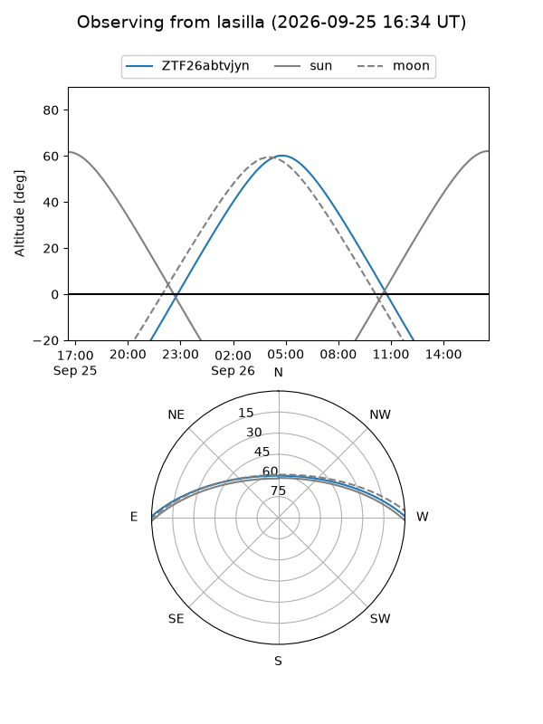
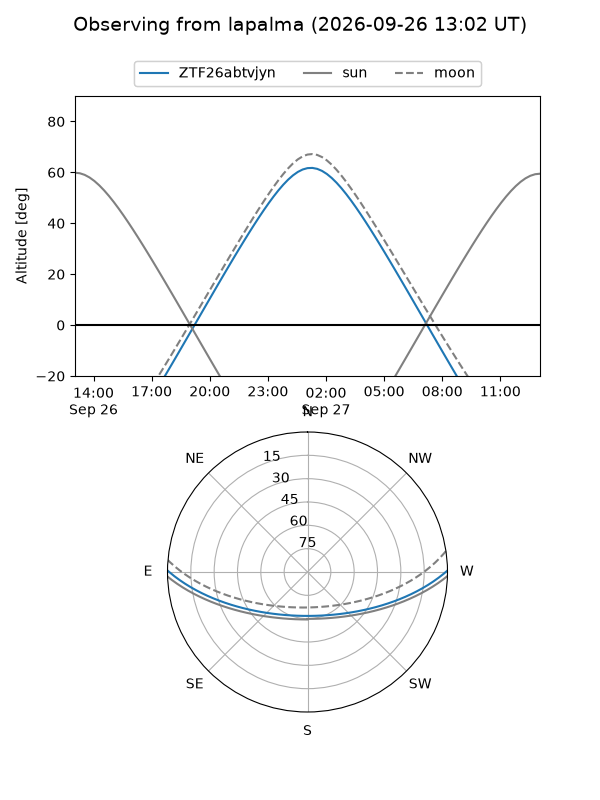
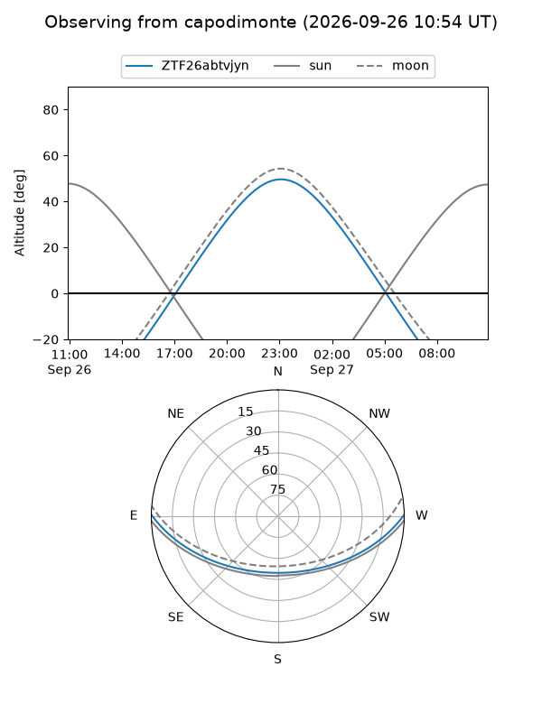
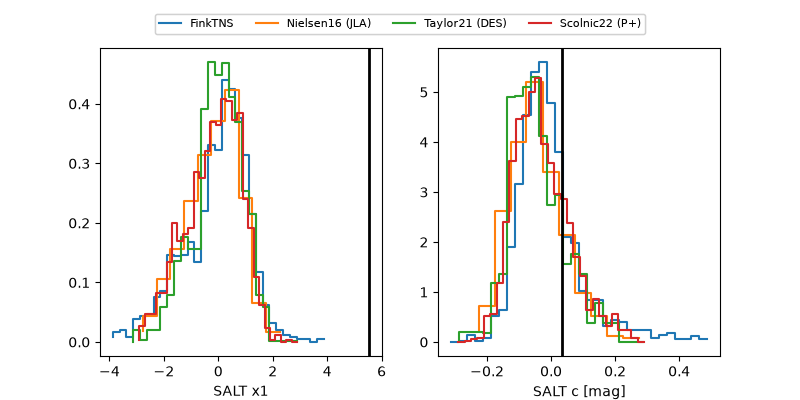

ZTF26abtvjyn
Target ZTF26abtvjyn at 2026-09-26 17:03
Aliases and brokers:
FINK-ZTF: ztf.fink-portal.org/ZTF26abtvjyn
Lasair-ZTF: lasair-ztf.lsst.ac.uk/objects/ZTF26abtvjyn
ALeRCE-ZTF: alerce.online/object/ZTF26abtvjyn
Direct TNS query: direct search
alt names
ZTF26abtvjyn (ztf,fink_ztf)
Coordinates:
equatorial (ra, dec) = 5.8676,+0.37843
equatorial (HMS+DMS) = 00:23:28.22,+00:22:42.33
galactic (l, b) = (108.0624,-61.68324)
Flags:
peak dt: +15.0
Photometry:
last ztfg=20.25, ztfr=20.34
2 ztfg, 5 ztfr detections
Lightcurve
Visibility



Additional plots
